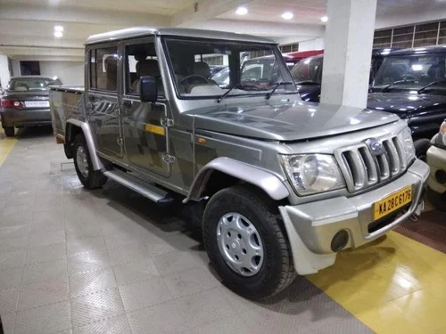
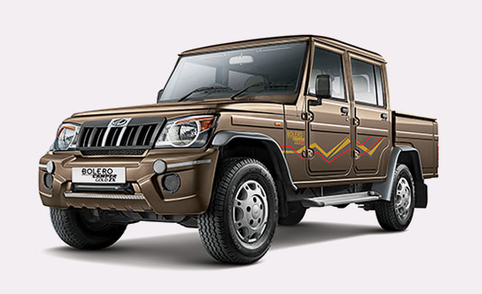
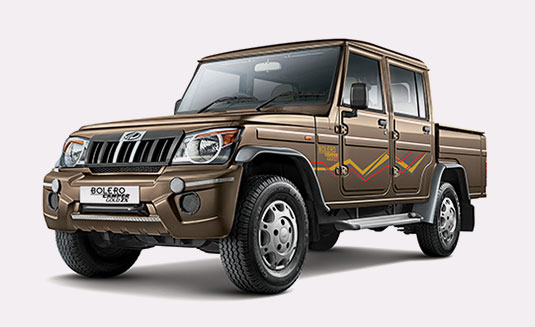

Mahindra
- The Mahindra Bolero Pikup 4x4 is a versatile pickup truck that seamlessly integrates robust performance, durability, and efficiency to effortlessly tackle demanding fleet operations. With a powerful diesel engine and advanced features, it is the perfect option for navigating rugged terrains and challenging conditions.
- Designed for durability, the Bolero Pikup 4x4 features a rugged chassis and load body construction to handle the stress of the cargo and tough terrain conditions. Featuring a powerful diesel engine that delivers impressive power and torque, the Mahindra Bolero Pikup 4x4 is used for a wide range of applications.
- Equipped with a reinforced cabin structure and other features designed to keep the driver and passengers safe at all times, the Bolero Pikup 4x4 has become a popular choice among fleet owners and operators. Additionally, fitted with a stronger and more durable double-bearing axle and strong 7R15 tyres, the pickup truck also has superb stability.
- With features such as a wider co-driver seat with recliner and headrest, a sliding and reclining seat for the driver, an engine immobilizer, ELR seat belts, and a modern instrument cluster, among other features, the Mahindra Bolero Pikup 4x4 is a popular light commercial vehicle in India.
- Moreover, with a starting price of Rs. 8.80 lakh, the Bolero Pikup 4x4 truck is considered to be a value-for-money, robust, durable and feature-rich commercial vehicle in the Indian light commercial vehicle segment.

.jpg) 
